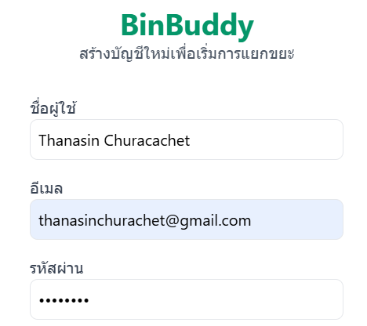
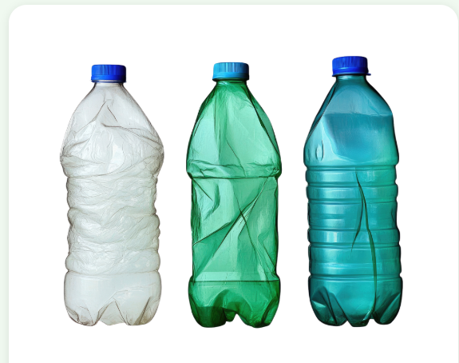
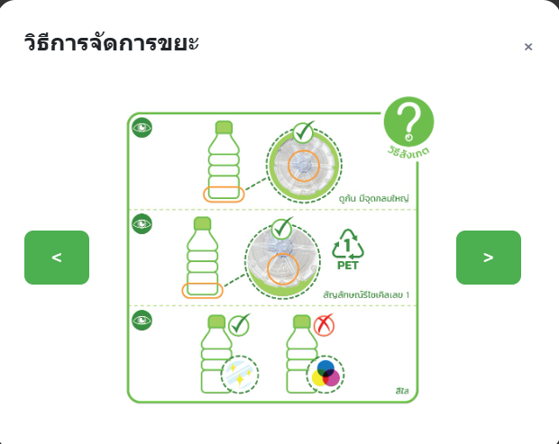
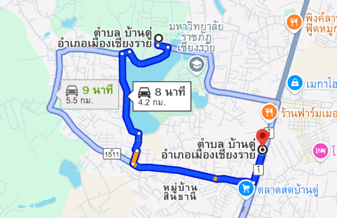

ใช้กล้องถ่ายภาพขยะ และปล่อยให้ AI ช่วยจำแนกประเภทขยะและแนะนำวิธีจัดการที่เหมาะสม
เริ่มสแกน →
กรอกข้อมูลพื้นฐานเพื่อเริ่มต้นใช้งาน BinBuddy ได้ทันที

ใช้กล้องมือถือถ่ายภาพขยะที่ต้องการจำแนก

AI วิเคราะห์และแนะนำวิธีจัดการขยะที่เหมาะสม

นำขยะไปทิ้งตามคำแนะนำที่จุดทิ้งขยะใกล้คุณ